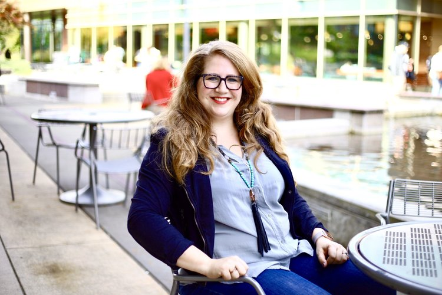

VIRGINIA ROBERTS
Azure Program Manager at Microsoft
What did you want to be when you were younger?
I had a lot of ideas when I was younger; I wanted to be an artist, a chemist, a marine
biologist. When I got a little older, I was really excited about a career in software, but like
a lot of people, I felt discouraged by the industry, so I didn't pursue that until after I got
my college degree in linguistics.

When did you first become interested in STEM and a career in the tech-industry?
I had always been interested in STEM, especially Natural Science. I thought I wanted to do
something in Biology or maybe even become a zookeeper (I had always loved nature and animals). I
hadn't really considered the tech industry until after college; I really wish I'd listened to
those people talking about opportunities in computational linguistics while I was studying.
After I graduated, I saw how much of a tech boom there was in my city and how successful people
were with those opportunities, so I started looking into the field. My first role in the tech
industry was as a Linguistics tester at Microsoft. I worked on the proofing tools such a spell
check and thesaurus for language that not many people spoke called Catalan from northeastern
Spain.
Can you tell us about App Camp for Girls?
In my work with App Camp for Girls, I really believe we're making an impact on the future of the
tech industry. We are a nonprofit organization that hosts camps in multiple cities across the
country. We teach girls and underrepresented genders how to build mobile apps from start to
finish in one week. Through the program, we give our campers mentors to lookup to in STEM fields
because all our volunteers are women involved in the software industry. We also showcase the
amazing things that technology can do by giving them a hands-on way to work with tech.
A lot of the times we have campers who haven't had much exposure to creating software or coding
and when we show them what they can do with the few lines of code, they're completely blown
away. It really opens their eyes up to new careers that they maybe didn't think of before.
What challenges have you faced in the STEM community as a woman?
When I took on a non-technical position as a woman in an engineering organization, some people
didn't perceive me to be as valuable as others with a more technical role. Even though I had
more insight on the business, operations, customer service side of the company, that was how I
was often perceived. The way that I won people over despite those preconceived notions was by
interacting with them on a deeper level. For example, going the extra mile to schedule an
in-person meeting instead of communicating over email and really talking to them to understand
the heart of a problem. That gave me a chance to demonstrate my skills and offer ideas that
would help solve a problem that they might not have thought of before.
How have you seen the STEM community evolve over time?
When I was first exposed to the tech industry, all the women that I knew - there were fewer at
the time - really conformed to the look of the stereotypical “male software engineer”. Now I see
a lot more versions of femininity and womanhood represented in Tech. I don't think women have to
look like “one of the guys” anymore to be taken seriously. There's still some sort of biased
against femininity in STEM, but I do see that diminishing.
What advice can you give girls pursuing STEM?
Try out classes early on in school, starting from middle school even because if you don’t start
pursuing them in the beginning it can really close doors to advance courses later in high school
and college that would allow you to dive deeper into STEM.
Never underestimate the power of networking. As important as your technical skills and portfolio
are, people are the thing that will help you succeed. By talking to people in the industry and
staying in touch with them, you can make great impressions on people which will help you get
that job or promotion that you want.